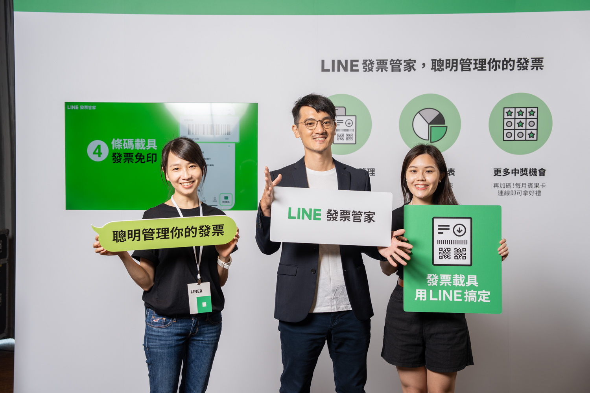

The problem
Taiwan's digital invoice adoption was stuck at 30% despite years of government promotion. The user experience was fragmented, confusing, and intimidating for people who had never tried an existing solution.
In Taiwan, invoices are part of daily life because of tax rules and the invoice lottery. People were motivated to collect them, but the digital system had still stalled after more than 10 years of government promotion.
As of our research phase, the key insight was that adoption mattered more than competition. If users could not get started easily, they would never experience the product's value.
How we knew we could solve it
We looked at the existing invoice tools in Taiwan through market sizing, UX teardown, and 1-on-1 user interviews. Functional competitors already existed, but they required users to download another app and figure out a complicated setup flow on their own.
Interviewing eight users for about an hour each helped us understand how little awareness people had around cloud invoices, how confusing the government flow felt, and why many users were reluctant to install a separate app at all.
The turning point was simple:
More than 90% of Taiwanese users already had LINE installed.
We decided to make it accessible inside LINE and remove friction wherever possible.
What I did
Researched the adoption problem
Combined market analysis and user interviews to understand why existing tools were failing first-time users.
Built a two-track strategy
Simplified onboarding for new users while designing differentiated value for more experienced ones.
Used LINE's ecosystem to lower friction
Positioned the product as a simple web-based service inside LINE so users did not need to download another app, create another account, or worry about phone storage.
Led launch and cross-functional execution
Launched the service by coordinating 10+ local and international teams across engineering, design, marketing, legal, and customer service.
What we shipped
The MVP focused on removing friction for first-time users and stripping the experience down to what actually mattered. We let users sign up for a cloud invoice account directly within LINE Invoice instead of sending them out to the Ministry of Finance site.
We also simplified the interface to the essentials, made invoice records easier to recognize with merchant names and purchased items, and added spending analysis so users could instantly see where their money went each month.
On top of that, I added a Bingo-style gamification feature to increase engagement around invoice checking. It was intentionally small, budget-aware, and distinctive enough to help differentiate the product.
Product glimpse
A few key LINE Invoice screens from the shipped experience

Impact
- Web-first approach removed the extra app barrier entirely
- Product strategy grounded in actual first-time user behaviour
After launch

After months of research, iteration, and cross-functional execution, LINE Invoice launched and resonated far beyond our expectations. In the first year it attracted hundreds of thousands of users and reached a very high user satisfaction rate.
For us, that validated two things: we were solving a real problem users had struggled with for years, and we had found a genuinely strong position in the market.
What I learned
This was my first true end-to-end product ownership experience, and it taught me that product management is as much about empathy and alignment as it is about features or roadmaps.
I learned how to work with designers, engineers, marketers, legal teams, security stakeholders, executives, and international collaborators by understanding what each group values and translating the problem into their language.